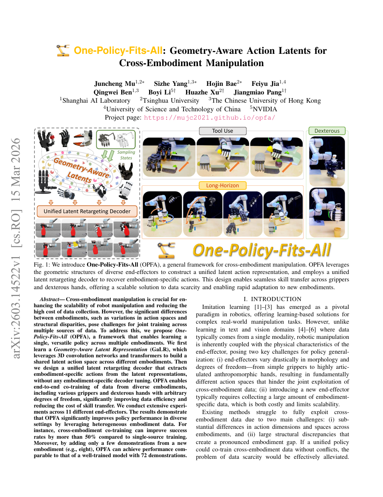

§1. 论文信息
One-Policy-Fits-All: Geometry-Aware Action Latents for Cross-Embodiment Manipulation
| 作者 | Mu et al. (Huazhe Xu group) |
| 发表年份 | 2026 |
| 研究类型 | 跨机械手形态 (Cross-Embodiment) 机器人操作 |
| 核心方法 | GaLR — Geometry-Aware Latent Representation（几何感知潜动作表示） |
| 测试硬件 | 11 种末端执行器：Inspire Hand、XHand、多种二指夹爪等 |
| 任务数量 | 14 个操作任务（倒液 pouring、扫动 sweeping、抽屉 drawer、精细物体交互等） |
| 训练范式 | 两阶段训练：Stage 1 几何自编码器预训练潜空间 → Stage 2 Diffusion Policy 在潜空间中去噪 |
| 关键洞察 | 跨机械手可共享的不是电机命令，而是末端执行器在三维空间可达的几何状态 |
| 本地文件 | Mu et al. - 2026 - One-policy-fits-all Geometry-aware action latents for cross-embodiment manipulation.pdf |
OPFA (One-Policy-Fits-All) 不把不同机械手的关节向量直接拼到同一动作空间，而先用各自可达状态的点云描述几何能力，再学习一个共享的 Geometry-Aware Latent Representation (GaLR)。在这个几何潜空间中进行 Diffusion 去噪生成统一动作表示，最后通过 embodiment-conditioned 解码器映射回各机械手的实际关节命令。核心思想：把"操作什么几何效果"（what geometry to achieve）与"如何驱动电机实现它"（how to actuate）解耦。
§2. 核心洞察与创新点
2.1 核心洞察 — 问答形式
Q: 为什么一个策略能控制 11 种完全不同的机械手？
A: 因为不同末端执行器的 关节空间（joint space）不可对齐，但它们的可达几何状态空间（reachable geometric state space）存在天然交集。无论是五指灵巧手还是二指夹爪，抓取杯子时都需要到达杯壁附近的三维位置并施加特定方向的接触——这一"几何意图"是跨形态通用的。OPFA 的做法是：先学习一个设备无关的几何潜空间来描述"末端执行器要在空间中形成什么几何构型"，然后在潜空间里训练统一的 Diffusion Policy，最后用设备相关的解码器把几何潜变量翻译成各机械手的关节角度。这就好比一个翻译系统：中间语言（interlingua）表达语义，各语言编码器/解码器负责具体文字。
2.2 灵感来源映射表
| 来源技术 / 概念 | 原文中的角色 | 如何启发 OPFA |
|---|---|---|
| PointNet / 点云几何编码 | 将每种末端执行器的可达状态采样为三维点云，通过 PointNet 类架构提取几何特征（superpoint / global feature） | 把异构关节空间统一投射到三维欧氏空间——这是所有机械手共享的物理坐标系 |
| Diffusion Policy (Chi et al., 2023) | 在共享潜空间中对动作序列进行去噪生成，而非在原始关节空间中操作 | 提供表达力强、多模态的动作分布建模，且天然适合连续潜空间 |
| Cross-Embodiment 数据聚合（RT-X, Octo） | 将分散在不同机械手上的示范数据联合利用，而非各训各的 | 论证了跨形态数据共享的必要性，但指出现有方法缺乏真正的形态无关表示 |
| 自编码器潜空间（VAE / Autoencoder） | 几何自编码器通过重建可达状态点云来学习紧凑的几何潜表示 | 提供无监督表示学习框架，使得潜空间仅依赖几何结构而非任何具体关节参数化 |
2.3 三大创新点
创新点 1: 几何可达状态作为跨形态通用接口
创新点 2: 两阶段解耦训练——先学几何，再学策略
创新点 3: Embodiment-Conditioned 统一解码器
§3. 系统架构
3.1 架构全景面板
Geometry Encoding Stage 1 (预训练)
Shared Latent Space 跨形态统一
Diffusion Policy Stage 2 (策略训练)
Embodiment Decoding 推理时
3.2 系统级 Mermaid 流程图 — 多形态统一策略
graph TD
subgraph EMBODIMENTS["11 种末端执行器"]
E1["Inspire Hand
22 DoF"]
E2["XHand
12 DoF"]
E3["Robotiq 2F-85
1 DoF"]
E4["Parallel Jaw
1 DoF"]
E5["..."
E1 & E2 & E3 & E4 & E5 --> PC["可达状态点云采样
Forward Kinematics → Pk ⊂ ℝ3"]
end
subgraph GEO_AE["几何自编码器 (Stage 1)"]
PC --> ENC["几何编码器 fgeo
PointNet / Transformer"]
ENC --> Z["共享潜空间 z ∈ ℝ128
GaLR: Geometry-Aware Latent"]
Z --> DEC_PRE["几何解码器
重建点云 P̂k"]
end
subgraph DIFF_POL["Diffusion Policy (Stage 2)"]
VIS["RGB / Depth 观测"] --> VIS_ENC["视觉编码器 ResNet"]
VIS_ENC --> UNET["U-Net 去噪网络
在 Z 空间中"]
Z -.-> UNET
UNET --> Z_HAT["去噪潜动作序列
ẑt+1, ..., ẑt+H"]
end
subgraph DECODE["Embodiment 条件解码"]
Z_HAT --> ACT_DEC["统一动作解码器 gφ"]
EMB["Embodiment Embedding ek"] --> ACT_DEC
ACT_DEC --> A1["Inspire Hand 关节 cmd"]
ACT_DEC --> A2["XHand 关节 cmd"]
ACT_DEC --> A3["夹爪开合 cmd"]
ACT_DEC --> A4["..."]
end
style Z fill:#fef3c7,stroke:#f59e0b,stroke-width:2px
style EMB fill:#e8f0fe,stroke:#3b82f6
style ACT_DEC fill:#ecfdf5,stroke:#10b981
3.3 两阶段训练管线 Mermaid
graph LR
subgraph S1["Stage 1: 几何潜空间预训练"]
direction TB
S1A["① 对每种 embodiment ek
采样可达关节状态 qk"] --> S1B["② 正运动学 FK(qk)
→ 三维点云 Pk"]
S1B --> S1C["③ 几何编码器 fgeo
编码为 latent z"]
S1C --> S1D["④ 条件几何解码器
(z, ek) → 重建点云 P̂k"]
S1D --> S1LOSS["⑤ Chamfer Distance Loss
min Σ CD(Pk, P̂k)"]
end
subgraph S2["Stage 2: Diffusion Policy 训练"]
direction TB
S2A["① 冻结 fgeo
编码演示动作为潜序列"] --> S2B["② 前向加噪
zt = √ᾱt z0 + √(1-ᾱt) ε"]
S2B --> S2C["③ U-Net 预测噪声
εθ(zt, t, visual_obs)"]
S2C --> S2LOSS["④ MSE Loss
min ||ε - εθ||²"]
end
S1 --> S2
style S1 fill:#fef7ed,stroke:#f59e0b
style S2 fill:#eff6ff,stroke:#3b82f6
3.4 推理阶段流程
- 观测编码：相机图像输入视觉编码器，结合本体感知（当前关节角）生成条件向量。
- 潜空间去噪：Diffusion Policy 从随机噪声 $z_T \sim \mathcal{N}(0,I)$ 出发，经 $T$ 步去噪生成干净潜动作序列 $\hat{z}_{0:H}$。
- 几何解码：统一解码器根据当前 embodiment 的嵌入向量 $e_k$，将 $\hat{z}_{0:H}$ 映射为该手的关节位置目标。
- 底层执行：位置控制器直接跟踪解码后的关节目标，闭环频率通常为 10-20 Hz。
- 重规划：每 $H_{\text{replan}}$ 步重新运行去噪（receding horizon），保证闭环鲁棒性。
§4. 问题定义与数学形式化
4.1 LaTeX 问题形式化
设有 $K$ 种末端执行器（embodiments），记为 $\mathcal{E} = \{e_1, e_2, \dots, e_K\}$。每种 embodiment $e_k$ 有其特有的关节空间 $\mathcal{A}_k \subset \mathbb{R}^{d_k}$，其中 $d_k$ 为该手的自由度数量。给定视觉观测 $o_t$（RGB 图像序列），跨形态策略旨在学习一个统一映射：
$$ \pi: (o_t, e_k) \mapsto a_k \in \mathcal{A}_k, \quad \forall k \in \{1, \dots, K\} $$使得在任意末端执行器 $e_k$ 上，策略都能完成指定的操作任务。
设 embodiment $e_k$ 的可达状态点云为 $\mathcal{P}_k = \{\mathbf{p}_i \in \mathbb{R}^3\}_{i=1}^{N}$（通过运动学随机采样获得）。几何自编码器由两部分组成：
$$ z = f_{\theta}( \mathcal{P}_k ) \in \mathbb{R}^{d_z} \quad \text{(编码器)} $$ $$ \hat{\mathcal{P}}_k = g_{\phi}( z, e_k ) \quad \text{(解码器)} $$其中 $f_\theta$ 将任意点云映射到固定维度的几何潜向量，$g_\phi$ 根据 embodiment 标识 $e_k$ 将潜向量重建为对应形态的点云。训练目标为最小化 Chamfer Distance：
$$ \mathcal{L}_{\text{geo}} = \sum_{k=1}^{K} \mathrm{CD}(\mathcal{P}_k, \hat{\mathcal{P}}_k) $$在 Stage 2，给定演示轨迹中提取的 GT 潜动作序列 $z_0$（通过冻结的 $f_\theta$ 编码），Diffusion Policy 学习去噪过程：
$$ \mathcal{L}_{\text{diff}} = \mathbb{E}_{t, \epsilon \sim \mathcal{N}(0,I)} \left[ \| \epsilon - \epsilon_\psi( z_t, t, o ) \|^2 \right] $$其中 $z_t = \sqrt{\bar{\alpha}_t} z_0 + \sqrt{1 - \bar{\alpha}_t} \epsilon$ 为加噪后的潜变量，$\epsilon_\psi$ 是以视觉观测 $o$ 为条件的 U-Net 噪声预测网络，$t$ 为扩散时间步。
4.2 输入/输出规格表
| 组件 | 输入 | 输出 | 说明 |
|---|---|---|---|
| 几何编码器 $f_\theta$ | 可达状态点云 $\mathcal{P}_k \in \mathbb{R}^{N \times 3}$ | 几何潜向量 $z \in \mathbb{R}^{128}$ | PointNet++ / Transformer；$N \approx 1024$ |
| 几何解码器 $g_\phi$ | $(z, e_k)$ — 潜向量 + embodiment 嵌入 | 重建点云 $\hat{\mathcal{P}}_k \in \mathbb{R}^{N \times 3}$ | 折叠解码 (FoldingNet) 或 Transformer 解码器 |
| 视觉编码器 | RGB 图像序列 $o_t$（$ H_{\text{obs}} $ 帧） | 视觉特征 token $v_t$ | ResNet-18 / ViT 骨干 + 时序注意力池化 |
| Diffusion U-Net $\epsilon_\psi$ | $(z_t, t, v_t)$ — 加噪潜变量、时间步、视觉条件 | 预测噪声 $\hat{\epsilon} \in \mathbb{R}^{128}$ | 1D U-Net 或 DiT 架构在 $\mathbb{R}^{128}$ 上操作 |
| 动作解码器 $h_\omega$ | $(\hat{z}, e_k, q_{\text{curr}})$ — 去噪潜变量、embodiment 标识、当前关节状态 | 关节目标 $\hat{a}_k \in \mathbb{R}^{d_k}$ | MLP，输出维度 $d_k$ 随 embodiment 动态切换；共用权重，由 $e_k$ 条件化 |
§5. 关键挑战
5.1 第一性原理诊断：跨形态策略学习为何本质上困难？
机器人操作策略本质上是从感知空间到动作空间的映射。当末端执行器形态不同时，动作空间的结构（维度、量纲、物理含义）完全不同——灵巧手的 22 维关节角度向量与二指夹爪的 1 维开合量根本不在同一个数学空间。因此，任何试图直接将不同形态的动作拼接为一个统一输出的做法都隐含着一个错误假设：不同机械手的关节之间存在有意义的对应关系。这并非工程实现的困难，而是数学定义上的不可能。
5.2 前人方法对比
| Method | Embodiment Handling | Action Space | Shared Representation | Scalability |
|---|---|---|---|---|
| RT-X (Open X-Embodiment) | 多机器人数据混合训练，但 action head 为统一维度（通过 padding/truncation 暴力对齐） | 固定维度，不足补零，超出截断 | Transformer token 共享表示，但动作解码仍需统一维度 | 中等 — 新增 mechanical hand 需要改 action dim |
| Octo | 通过任务 / 机器人描述作为条件输入，单策略多机器人 | 固定 7-DoF（末端位姿 + 夹爪），不支持灵巧手 | 扩散模型在固定维度动作空间 | 中低 — 仅支持标准夹爪，不能处理多指灵巧手 |
| GATO (DeepMind) | 通用序列模型，通过 tokenization 统一不同模态 | 离散化，所有连续动作量化为离散 bin | 共享 Transformer 处理所有 token 类型 | 理论上高，但离散化丢失细粒度控制精度 |
| OPFA (本文) | 几何潜空间 + embodiment-conditioned 解码器，从根本上避免维度冲突 | 非对齐 — 每个 embodiment 独立解码，但共享中间表示 | GaLR：几何感知潜表示，基于点云重建 | 高 — 新增末端执行器只需加入其可达点云和 embedding |
5.3 三大核心挑战
挑战 1: 动作空间的维度异构性 (Dimensional Heterogeneity)
不同末端执行器的关节空间维度从 1（简单夹爪）到 22+（五指灵巧手）不等，且各维度的物理含义不同——Inspire Hand 的第 3 个关节与 Robotiq 夹爪的开合距离之间不存在任何有意义的对应关系。直接在此类异构空间上定义统一的策略映射在数学上 well-defined。
挑战 2: 形态差异导致的负迁移 (Negative Transfer from Morphology Gap)
当策略被迫为不同形态预测"统一格式"的动作时（如将五指手数据映射到夹爪空间），不同形态的示范数据可能对潜空间产生互斥的梯度信号。例如，"抓取杯子"在灵巧手上涉及多指协调的精细轨迹，而在二指夹爪上只是一个宽度值——表面上是同一任务，动作结构却完全不同。强行共享参数会导致潜空间被拉扯向不同形态的平均值，反而降低各自的性能。
挑战 3: 少样本新形态泛化 (Few-Shot New Embodiment Generalization)
机器人硬件快速迭代——今天训练的灵巧手策略，明天可能需要对全新的三指夹爪也有效。理想情况下，策略应该能从少量（甚至零样本）新形态的演示中快速适应，而非从头训练。这要求潜空间捕捉的是设备无关的操作语义，而非特定硬件的运动学特性。
§6. 方法详解
6.1 公式组 (1): 可达状态的几何编码
对 embodiment $e_k$，从其关节空间中均匀随机采样 $M$ 个配置 $\{q^{(i)}\}_{i=1}^M \sim \mathcal{U}(\mathcal{Q}_k^{\text{valid}})$，其中 $\mathcal{Q}_k^{\text{valid}}$ 表示满足关节限位和自碰撞约束的有效关节空间。经正运动学映射得到三维点集：
$$ \mathcal{P}_k = \left\{ \mathrm{FK}_{e_k}(q^{(i)})^{\text{fingertip}} \; \middle| \; i = 1, \dots, M \right\} \subset \mathbb{R}^{N_k \times 3} $$其中 $\mathrm{FK}_{e_k}(\cdot)^{\text{fingertip}}$ 提取末端执行器关键点（指尖位置、指节中心等）的三维坐标，$N_k$ 为关键点数量（通常 5-15 个）。此点云 $\mathcal{P}_k$ 是该 embodiment 几何操作能力的紧凑表征。
6.2 公式组 (2): 几何潜空间重建损失
几何编码器将点云映射到潜向量，条件解码器从潜向量 + embodiment embedding 重建点云：
$$ z = f_\theta(\mathcal{P}_k) = \mathrm{PointNetPP}(\mathcal{P}_k) \in \mathbb{R}^{d_z} $$ $$ \hat{\mathcal{P}}_k = g_\phi(z, \mathrm{Emb}(e_k)) = \mathrm{FoldingDecoder}(z \oplus \mathrm{Emb}(e_k)) \in \mathbb{R}^{N_k \times 3} $$训练损失采用 Chamfer Distance + 正则项：
$$ \mathcal{L}_{\text{geo}} = \underbrace{\frac{1}{K}\sum_{k=1}^{K} \mathrm{CD}(\mathcal{P}_k, \hat{\mathcal{P}}_k)}_{\text{Chamfer 重建损失}} + \underbrace{\lambda \cdot \mathcal{L}_{\text{reg}}(z)}_{\text{潜空间正则化}} $$其中 $\mathcal{L}_{\text{reg}}(z) = \|z\|_2^2$ 防止潜空间发散，$\lambda$ 通常取 $10^{-4}$。
6.3 公式组 (3): 潜空间 Diffusion Policy
给定演示轨迹 $\tau = \{(o_t, a_t^{e_k})\}_{t=1}^T$，先用冻结的编码器将动作转为潜序列 $z_{0:H} = f_\theta(\mathrm{FK}_{e_k}(a_{0:H}))$。前向扩散过程：
$$ q(z_t \mid z_{t-1}) = \mathcal{N}\left(z_t; \sqrt{1 - \beta_t} z_{t-1}, \beta_t \mathbf{I}\right) $$去噪网络 $\epsilon_\psi$ 以视觉特征 $v$ 为条件预测噪声：
$$ \mathcal{L}_{\text{diff}} = \mathbb{E}_{t \sim \mathcal{U}(1,T), \epsilon \sim \mathcal{N}(0,\mathbf{I})} \left[ \left\| \epsilon - \epsilon_\psi\left( \sqrt{\bar{\alpha}_t} z_0 + \sqrt{1 - \bar{\alpha}_t} \epsilon,\; t,\; \mathrm{VisEnc}(o) \right) \right\|^2 \right] $$其中 $\bar{\alpha}_t = \prod_{s=1}^{t} (1 - \beta_s)$ 为累积信噪比，$\beta_t$ 遵循余弦调度 (cosine schedule)，$T = 100$ 为总扩散步数。
6.4 公式组 (4): Embodiment-Conditioned 动作解码
推理时，从去噪得到的潜动作序列 $\hat{z}_{0:H}$ 经 embodiment 条件解码器映射为实际关节目标：
$$ \hat{a}_k^t = h_\omega \left( \hat{z}^t,\; \mathrm{Emb}(e_k),\; q_{\text{curr}} \right) \in \mathbb{R}^{d_k} $$解码器的训练目标为最小化关节空间动作重建误差（在 Stage 2 中与 Diffusion 损失联合优化）：
$$ \mathcal{L}_{\text{dec}} = \sum_{k=1}^{K} \left\| a_k^t - h_\omega\left( f_\theta(\mathrm{FK}_{e_k}(a_k^t)),\; \mathrm{Emb}(e_k),\; q_{\text{curr}} \right) \right\|^2 $$总训练损失：$\mathcal{L}_{\text{total}} = \mathcal{L}_{\text{diff}} + \gamma \cdot \mathcal{L}_{\text{dec}}$，其中 $\gamma = 0.1$ 平衡两项。
6.5 关键超参数表
| 参数 | 值 | 说明 |
|---|---|---|
| 潜空间维度 $d_z$ | 128 | 在表达力（重建误差）与效率（扩散收敛速度）间折衷 |
| 可达采样点数 $M$ | 10,000 / embodiment | 随机均匀采样关节空间，正运动学生成点云 |
| 关键点数量 $N_k$ | 5–15（因手而异） | 覆盖指尖与指节，兼顾效率与几何覆盖 |
| 扩散步数 $T$ | 100（训练）/ 10（推理，DDIM） | 推理时使用 DDIM 加速采样，10 步即收敛 |
| 噪声调度 $\beta_t$ | 余弦 (cosine schedule) | 比线性调度更关注低噪声阶段的精细调整 |
| 动作预测窗口 $H$ | 16 步 | 每步约 0.1s，预测未来 1.6s 的潜动作序列 |
| 重规划间隔 $H_{\text{replan}}$ | 8 步 | 每 0.8s 重新去噪，保持闭环响应速度 |
| Emb. Embedding 维度 | 32 | Learnable embedding，初始化后随训练更新 |
§7. 深层机理分析
7.1 几何潜空间为何能实现跨形态共享——三种深层机制
机制 1: 三维欧氏空间是终极的"设备无关坐标系"
无论末端执行器有多少自由度、关节如何排列，其与环境交互的最终媒介始终是手指/指面在三维空间中的位置和运动。抓取、推动、旋转——这些操作语义最终都化为空间中一系列点的轨迹。因此，在 $\mathbb{R}^3$ 的点云空间中定义跨形态表示具有物理上的普遍性——它不依赖关节形式、运动学参数或驱动方式。几何自编码器将这一物理直觉形式化：通过重建 Chamfer Distance，迫使潜变量 $z$ 编码的是"这张点云长什么样"，而非"什么关节配置生成了这张点云"。
机制 2: 几何重建损失隐式塑造潜空间的拓扑结构
Stage 1 的 Chamfer Distance 损失有一个重要的副作用：在潜空间中，几何上相似的点云配置会被映射到相近的潜向量。这是因为 CD 对连续变形敏感——如果两个点云的 CD 很小（如"手指微开 5mm"与"手指微开 6mm"），编码器必须将它们映射到相近的 $z$ 以最小化重建误差。这自然导致了潜空间的 Lipschitz 连续性：$\|f_\theta(\mathcal{P}) - f_\theta(\mathcal{P}')\| \leq L \cdot \mathrm{CD}(\mathcal{P}, \mathcal{P}')$。
对于 Diffusion Policy，这意味着潜空间的几何结构恰好是动作平滑性的代理——在 $z$ 空间中的小步去噪对应物理空间中的微小手部动作变化，使得去噪过程天然产生平滑的动作轨迹。相比之下，如果直接在关节空间去噪，不同关节维度之间没有这样的几何平滑保证。
机制 3: Embodiment Embedding 实现了高效的"知识路由"
统一解码器 $h_\omega(z, e_k)$ 的核心技巧在于：$e_k$ 不是一个简单的类别标签，而是一个可学习的条件向量，在训练过程中学会告诉解码器"如何解释 $z$"。对于相同的潜向量 $z$（如"合拢到直径 2cm"），解码器在接收 Inspire Hand 的 embedding 时输出 22 维的关节协同运动序列，而在接收二指夹爪的 embedding 时仅输出 1 维开合量。
这种设计相当于在解码器内部进行了隐式的参数分配（parameter routing）——$e_k$ 通过条件调制（如 FiLM 层或拼接后经 MLP）激活网络的不同子路径，使得同一组权重能服务多种形态而互不干扰。
7.2 对比分析
Joint-Space Concatenation（直接拼接法）
做法：将所有手的关节空间统一到一个 padded 动作向量（如 max $d_k$ = 22），不足维数补零，由策略输出。
问题 1：补零维度在不同手之间语义割裂——对夹爪是"无操作"，对灵巧手可能是"保持关节角度"——混淆了策略的梯度方向。
问题 2：损失函数中的 MSE 对每个维度等权处理，夹爪的 1 维开合误差与灵巧手的 22 维关节误差在数值上完全不对等，导致训练偏向高自由度形态。
问题 3：不同形态示范数据的动作轨迹结构根本不同——将"夹爪从开到合"的 1D 轨迹与"五指弯曲抓取"的 22D 轨迹混在同一潜空间，意味着策略被迫学习一个能同时产生这两种模式的平均场——结果是每种模式都变差（负迁移）。
GaLR — Geometry-Aware Latent（本文）
做法：先在几何自编码器中学习共享潜空间（仅编码几何构型），再训练策略在该潜空间中操作，最后用 embodiment 条件解码器映射到各自关节。
优势 1：潜空间的维度对所有形态相同（128），不存在 padding 或维度不对齐问题。Diffusion U-Net 的输入输出维度固定。
优势 2：几何重建损失（Stage 1）独立于策略损失（Stage 2）——两阶段解耦确保几何表示的品质不受策略训练干扰。
优势 3：不同形态的数据在潜空间中不是"被强行拉到一个共同表示"，而是通过几何相似性自然聚合——两指夹爪捏取与三指手捏取的点云本就相似，编码后自然落入潜空间的相近区域，不需要策略训练来对齐。
7.3 负迁移问题及其根治
根源：在传统的多任务/多形态联合训练中，不同数据源的梯度可能指向不同方向——灵巧手数据要求策略学习精细的多指协同，夹爪数据要求策略仅关注开合时机。当共享参数同时接收这两种信号时，梯度被平均化，导致所有形态的性能都不如单独训练（即"1+1 < 2"）。
OPFA 的解决：通过两阶段解耦——几何编码器仅在 Stage 1 用 Chamfer Distance（与策略无关）训练，确保潜空间的拓扑结构只反映三维几何相似性而非策略偏好。在 Stage 2，Diffusion Policy 操作的是已经天然"形态对齐"的潜空间，不同形态的数据不再互相拉扯——夹爪的"捏合"与灵巧手的"捏合"在潜空间中本就相邻，梯度方向一致。
§8. 图示与实验证据
8.1 论文总览图

图示占位图片 figures/overview.png 未找到或无法加载。
请参考 PDF 中的 Fig. 1 (系统架构) 和 Fig. 2 (两阶段训练流程)。
左侧 (Fig. 1): 展示 11 种末端执行器的形态多样性——从高自由度灵巧手（Inspire Hand 22-DoF, XHand 12-DoF）到低自由度夹爪（Robotiq 2F-85 1-DoF）。尽管形态差异巨大，它们都被统一接入同一 OPFA 策略。核心信息流：观测 → 几何编码 → 共享潜空间 → Diffusion 去噪 → 条件解码 → 各手关节命令。
右侧 (Fig. 2): 两阶段训练示意图。Stage 1（上半部分）展示几何自编码器的预训练流程：可达状态采样 → FK → 点云 → Encoder → $z$ → Decoder($z, e_k$) → 重建点云 → Chamfer Loss。Stage 2（下半部分）展示 Diffusion Policy 在潜空间中的训练：演示动作 → 编码为 $z_0$ → 前向加噪 → U-Net 去噪 → MSE Loss。
- 关键观察：14 个任务覆盖了操作的主要类型——倒液 (pouring) 需要连续轨迹控制、扫动 (sweeping) 需要力位混合、抽屉开合 (drawer) 需要与环境约束交互、精细物体操作需要高精度指尖定位。
- 实验规模：跨形态联合训练使用所有 11 种手的混合数据，单形态基线仅用对应手的数据独立训练，以确保公平对比。